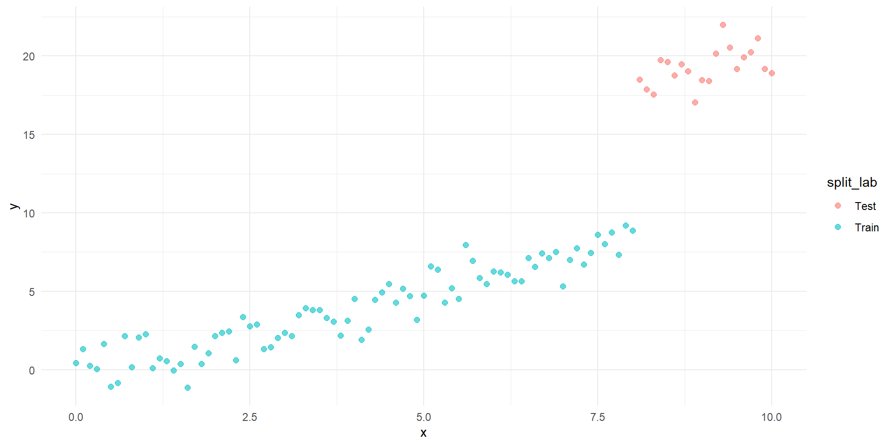
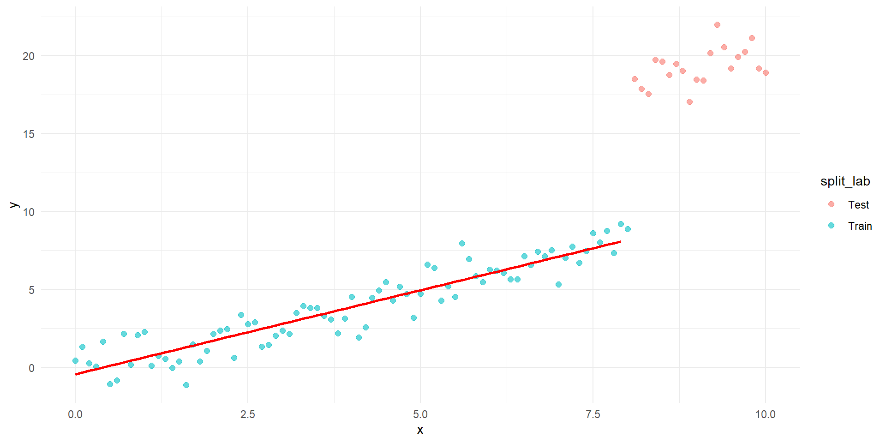
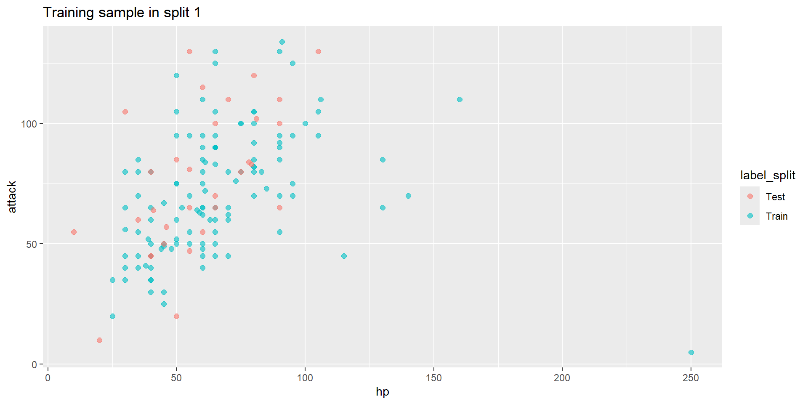

Rows: 151
Columns: 12
$ Name <chr> "Bulbasaur", "Ivysaur", "Venusaur", "Charmander", "Charme…
$ Type.1 <chr> "Grass", "Grass", "Grass", "Fire", "Fire", "Fire", "Water…
$ Type.2 <chr> "Poison", "Poison", "Poison", "", "", "Flying", "", "", "…
$ Combat.Power <int> 318, 405, 525, 309, 405, 534, 314, 405, 530, 195, 205, 39…
$ HP <int> 45, 60, 80, 39, 58, 78, 44, 59, 79, 45, 50, 60, 40, 45, 6…
$ Attack <int> 49, 62, 82, 52, 64, 84, 48, 63, 83, 30, 20, 45, 35, 25, 9…
$ Defense <int> 49, 63, 83, 43, 58, 78, 65, 80, 100, 35, 55, 50, 30, 50, …
$ Sp..Atk <int> 65, 80, 100, 60, 80, 109, 50, 65, 85, 20, 25, 90, 20, 25,…
$ Sp..Def <int> 65, 80, 100, 50, 65, 85, 64, 80, 105, 20, 25, 80, 20, 25,…
$ Speed <int> 45, 60, 80, 65, 80, 100, 43, 58, 78, 45, 30, 70, 50, 35, …
$ Generation <int> 1, 1, 1, 1, 1, 1, 1, 1, 1, 1, 1, 1, 1, 1, 1, 1, 1, 1, 1, …
$ Legendary <lgl> FALSE, FALSE, FALSE, FALSE, FALSE, FALSE, FALSE, FALSE, F…Data Mining: Übung 05
Fragen aus Digicampus
Frage 1
- Wie wichtig sind die R-Codes für die Bearbeitung der Klausur?
- Es wird nicht erwartet, dass man Zeilenweise Code schreiben kann. Wichtiger ist dass man Code verstehen und interpretieren kann. Vereinzelnd wird vielleicht auch nach einzelnen Befehlen o.Ä. gefragt.
- Müssen wir diese auswendig wissen?
- Sie dürfen zur Klausur 3 doppelseitig beschriebene ((digtal) handschriftlich) Blätter mitbringen, auf welchen natürlich auch Code stehen darf.
- Können Sie uns zeigen, wo man solche Datensätze herbekommt?
Frage 2
- Könnten sie die slides zur Übung bzw. die Lösung des Übungsblattes schon vor der Übung hochladen? So könnte man währenddessen Notizen machen.
- Ja.
Frage 3
- Obwohl ich alle entsprechende Packages installiert habe funktioniert bei mir die ‘lin_model’ Funktion nicht. Habe als Alternative immer ; ‘lm’ genommen. Dennoch würde es mich interessieren warum es nicht auf ihrem Weg klappt.
- Siehe folgende Slides!
Wiederholung
Daten für die Übung Slide 1
Daten für die Übung Slide 2
data_poke <- data_poke %>%
as_tibble() %>%
clean_names() %>%
select(-c(type_2))%>%
mutate(type_1 = factor(type_1))
glimpse(data_poke) Rows: 151
Columns: 11
$ name <chr> "Bulbasaur", "Ivysaur", "Venusaur", "Charmander", "Charme…
$ type_1 <fct> Grass, Grass, Grass, Fire, Fire, Fire, Water, Water, Wate…
$ combat_power <int> 318, 405, 525, 309, 405, 534, 314, 405, 530, 195, 205, 39…
$ hp <int> 45, 60, 80, 39, 58, 78, 44, 59, 79, 45, 50, 60, 40, 45, 6…
$ attack <int> 49, 62, 82, 52, 64, 84, 48, 63, 83, 30, 20, 45, 35, 25, 9…
$ defense <int> 49, 63, 83, 43, 58, 78, 65, 80, 100, 35, 55, 50, 30, 50, …
$ sp_atk <int> 65, 80, 100, 60, 80, 109, 50, 65, 85, 20, 25, 90, 20, 25,…
$ sp_def <int> 65, 80, 100, 50, 65, 85, 64, 80, 105, 20, 25, 80, 20, 25,…
$ speed <int> 45, 60, 80, 65, 80, 100, 43, 58, 78, 45, 30, 70, 50, 35, …
$ generation <int> 1, 1, 1, 1, 1, 1, 1, 1, 1, 1, 1, 1, 1, 1, 1, 1, 1, 1, 1, …
$ legendary <lgl> FALSE, FALSE, FALSE, FALSE, FALSE, FALSE, FALSE, FALSE, F…Lineare Modelle in R
Approach 1:
Call:
lm(formula = attack ~ ., data = lin_model_data)
Residuals:
Min 1Q Median 3Q Max
-0.7967 -0.2214 -0.0515 0.1056 8.8256
Coefficients:
Estimate Std. Error t value Pr(>|t|)
(Intercept) -0.442740 0.296799 -1.492 0.138
combat_power 0.992317 0.003077 322.498 <2e-16 ***
hp -0.989466 0.004530 -218.404 <2e-16 ***
defense -0.987246 0.005177 -190.686 <2e-16 ***
sp_atk -0.995381 0.003787 -262.835 <2e-16 ***
sp_def -0.992455 0.005326 -186.334 <2e-16 ***
speed -0.981287 0.004681 -209.652 <2e-16 ***
legendaryTRUE -0.288658 0.389465 -0.741 0.460
---
Signif. codes: 0 '***' 0.001 '**' 0.01 '*' 0.05 '.' 0.1 ' ' 1
Residual standard error: 0.7856 on 143 degrees of freedom
Multiple R-squared: 0.9992, Adjusted R-squared: 0.9991
F-statistic: 2.454e+04 on 7 and 143 DF, p-value: < 2.2e-16Approach 2:
library(tidymodels)
lin_model_tidy <- linear_reg() %>%
fit(attack ~., data = lin_model_data)
lin_model_tidy$fit %>% summary()
Call:
stats::lm(formula = attack ~ ., data = data)
Residuals:
Min 1Q Median 3Q Max
-0.7967 -0.2214 -0.0515 0.1056 8.8256
Coefficients:
Estimate Std. Error t value Pr(>|t|)
(Intercept) -0.442740 0.296799 -1.492 0.138
combat_power 0.992317 0.003077 322.498 <2e-16 ***
hp -0.989466 0.004530 -218.404 <2e-16 ***
defense -0.987246 0.005177 -190.686 <2e-16 ***
sp_atk -0.995381 0.003787 -262.835 <2e-16 ***
sp_def -0.992455 0.005326 -186.334 <2e-16 ***
speed -0.981287 0.004681 -209.652 <2e-16 ***
legendaryTRUE -0.288658 0.389465 -0.741 0.460
---
Signif. codes: 0 '***' 0.001 '**' 0.01 '*' 0.05 '.' 0.1 ' ' 1
Residual standard error: 0.7856 on 143 degrees of freedom
Multiple R-squared: 0.9992, Adjusted R-squared: 0.9991
F-statistic: 2.454e+04 on 7 and 143 DF, p-value: < 2.2e-16Cross Validation
Wiederholung: Training und Test Split
Split generieren:
Approach 1:
Problem mit Training und Test Split
Problem:


Cross Validation Erklärung
Lösung:

Cross Validation Beispiel Teil 01
Zugriff über analysis und assessment Funktion:
# A tibble: 120 × 11
name type_1 combat_power hp attack defense sp_atk sp_def speed generation
<chr> <fct> <int> <int> <int> <int> <int> <int> <int> <int>
1 Bulb… Grass 318 45 49 49 65 65 45 1
2 Ivys… Grass 405 60 62 63 80 80 60 1
3 Venu… Grass 525 80 82 83 100 100 80 1
4 Char… Fire 309 39 52 43 60 50 65 1
5 Char… Fire 405 58 64 58 80 65 80 1
6 Squi… Water 314 44 48 65 50 64 43 1
7 Wart… Water 405 59 63 80 65 80 58 1
8 Cate… Bug 195 45 30 35 20 20 45 1
9 Butt… Bug 395 60 45 50 90 80 70 1
10 Weed… Bug 195 40 35 30 20 20 50 1
# ℹ 110 more rows
# ℹ 1 more variable: legendary <lgl>
Cross Validation Beispiel Teil 02
lin_model_tidy <- linear_reg()
rec_lin_model <- recipe(attack ~., data = data_cv)
lin_model_tidy_fit_resample <- fit_resamples(lin_model_tidy, rec_lin_model, folds)
lin_model_tidy_fit_resample%>% collect_metrics()# A tibble: 2 × 6
.metric .estimator mean n std_err .config
<chr> <chr> <dbl> <int> <dbl> <chr>
1 rmse standard 0.641 5 0.297 Preprocessor1_Model1
2 rsq standard 0.999 5 0.000988 Preprocessor1_Model1Übung 03